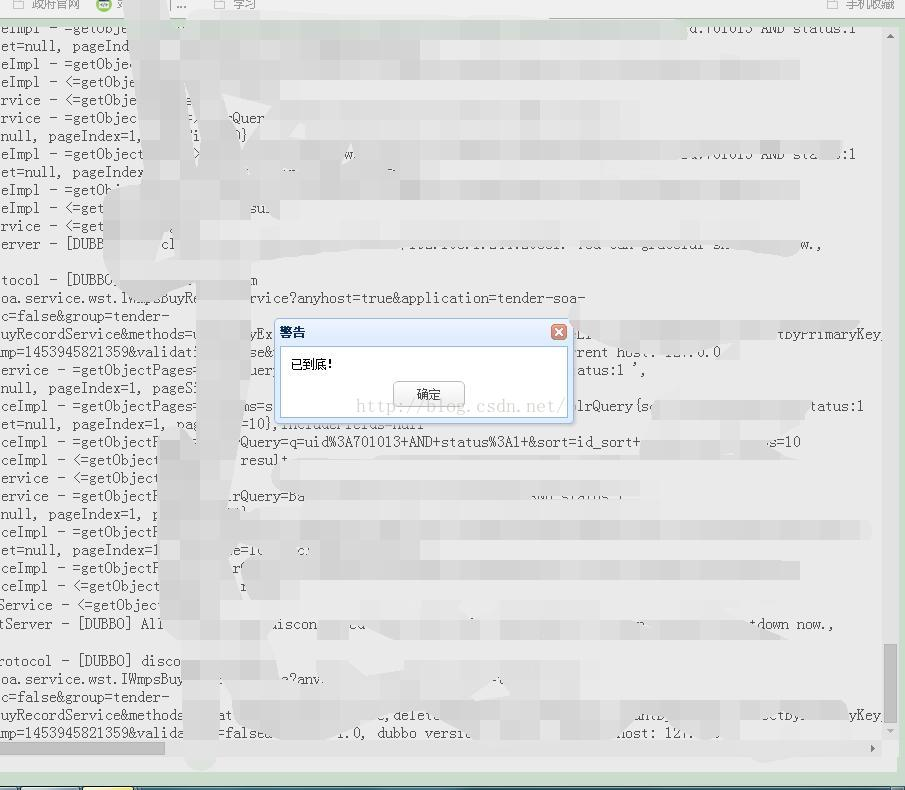

最近为了提升用户使用的便捷性，要求在日志查询界面加入双击某条日志，查看相关日志的功能，就好像我通过这条日志定位到日志文件中的某行，然后就像在文件中查看一样，上下滚动，看全部的日志，以下，和大家分享这是如何做到的。
<table class="easyui-datagrid" id="resultContext" title="搜索结果" style="width:98%;height:600px;"
data-options="singleSelect:true,collapsible:true,nowrap:false,<span style="color:#ff0000;background-color: rgb(255, 255, 153);">onDblClickRow:showMore"</span> pagination="true">
<thead>
<tr>
<th data-options="field:'localHostIp',align:'left'" style="width:10%">Ip</th>
<th data-options="field:'localHostName',align:'left',hidden:true" >机器名称</th>
<th data-options="field:'domain',align:'left',hidden:true">域名</th>
<th data-options="field:'contextType',align:'left'" formatter="getLowercaseletters" style="width:10%">日志类型</th>
<th data-options="field:'context',align:'left'" style="width:78%">日志内容</th>
<th data-options="field:'level',align:'left',hidden:true" >级别</th>
<th data-options="field:'created',align:'left',hidden:true" formatter="getLocalTime" >生成日期</th>
<th data-options="field:'remark',align:'left',hidden:true">备注</th>
</tr>
</thead>
</table>function showMore(){
var row = $("#resultContext").datagrid("getSelected");
var showMoreUrl ="";
showMoreUrl ="$!homeModule.getTarget("/es/showmore.action")";
showMoreUrl = showMoreUrl+"?created_begain_more_info="+row.created+"&localHostIp="+row.localHostIp+"&domain="+row.domain;
w<span style="color:#ff0000;background-color: rgb(255, 255, 153);">indow.open(showMoreUrl)</span>;
}
<div id="showmore_main_father" style="width:99%; height:730px;background-color: white" >
<div id ="showmore_main" style="position:absolute; width:99%; height:730px; overflow:scroll;background-color: white">
<div id ="showmore_center" style="width:99%;">showmore_center</div>
</div>
</div>
<div align="center" style=" width:100%;background-color: white">
<div style="height:15px;">
<img id="img_Loading_up" style="whith:100px;height: 15px;" src="$!homeModule.getTarget("/common/images/loading/l3.gif")"></img>
</div>
</div></pre><p></p><p></p><h2>js部分：</h2><p></p><pre code_snippet_id="1569974" snippet_file_name="blog_20160129_5_393454" name="code" class="html"><script type="text/javascript">
/*---------------------<span style="color:#ff0000;background-color: rgb(255, 255, 153);">检测鼠标滚动</span>---start---------------------*/
var scrollFunc=function(e){
//var direct=0;
e=e || window.event;
if(e.wheelDelta){//IE/Opera/Chrome
if(e.wheelDelta==120) {
mourseMoveUp();
} else {
mourseMoveDown();
}
}else if(e.detail){//Firefox
if(e.detail==-3) {
mourseMoveUp();
}else {
mourseMoveDown();
}
}
} /*注册事件*/
if(document.addEventListener){ document.addEventListener('DOMMouseScroll',scrollFunc,false); }
window.onmousewheel=document.onmousewheel=scrollFunc;//IE/Opera/Chrome
/*---------------------检测鼠标滚动---end---------------------*/
var newmove = 0 ;
var oldmove = 0 ;
var old_scrollTop=0;
var new_scrollTop=0;
var count =0;
$(document).ready(function(){
/*-------------------有滚轮的滚动事件---------------------*/
$("#showmore_main").scroll(function(){
var newscrollTop=$("#showmore_main").scrollTop();
old_scrollTop=new_scrollTop
new_scrollTop=newscrollTop;
})
})
var count = 0;
function mourseMoveUp(){
oldmove = newmove;
newmove= new_scrollTop;
if(oldmove == newmove){
count=count+1;
if(count>20){
ShowInfoUP();
count=0;
}
}else{
count = 0;
}
}
function mourseMoveDown(){
oldmove = newmove;
newmove= new_scrollTop;
if(oldmove == newmove){
count=count+1;
if(count>20){
ShowInfoDOWN();
count=0;
}
}else{
count = 0;
}
}
var searchMsgJson =$!msg;
var domain = "$!searchWords.domain";
var created_begain_more_info = "$!searchWords.created_begain_more_info";
var localHostIp =" $!searchWords.localHostIp";
var upcount = -1;
var downcount = 0;
var commandtype = "";
$(function () {
var easyuijson = {};
var searchMsg = "";
var hits = searchMsgJson.hits.hits;
var printStr = "";
//组合符合easyui格式的json串
for (var i = 0; i < hits.length; i++) {
hits[i] = hits[i]._source["@message"];
printStr ="<input type='text' style='width:0px;height:1px;' id='printStrTop'></input >"+ hits[i].context+"</br>"+ printStr ;
}
$("#showmore_center").html(printStr);
$('#img_Loading_up').hide();
findDimensions();
});
function ShowInfoUP(){
upcount=upcount+1;
commandtype="lte";
addLogInfo();
}
function ShowInfoDOWN(){
downcount=downcount+1;
commandtype="gte";
addLogInfo();
}
function addLogInfo() {
load();
$.ajax({
type: "POST",
data:{
created_begain_more_info : created_begain_more_info,
localHostIp:localHostIp,
domain:domain,
upcount:upcount,
downcount:downcount,
commandtype:commandtype
},
url: '$!homeModule.getTarget('/es/showMoreLogInfo.action')',
dataType: "json",
error: function(request) {
$.messager.alert("警告","加载出错！");
},
success: function(result) {
$("#printStrTop").attr("id","printStrTop_old");
var reslutJson = eval("(" + result + ")");
var hits = reslutJson.hits.hits;
var printStr = "";
//组合符合easyui格式的json串
for(var i=0;i<hits.length;i++){
hits[i] = hits[i]._source["@message"];
printStr = hits[i].context+"</br>" +printStr;
if(i==(hits.length-1)){
printStr = "<input type='text' style='width:0px;height:1px;' id='printStrTop'></input >"+hits[i].context+"</br>" +printStr;
}
}
var htmlString = $("#showmore_center").html();
if(commandtype=="gte"){
htmlString = htmlString +printStr;
}else{
htmlString = printStr + htmlString ;
}
$("#showmore_center").html(htmlString);
disLoad();
if(hits.length==0){
if(commandtype=="gte"){
$.messager.alert("警告","已到底！");
downcount=downcount-1;
}else{
$.messager.alert("警告","已到顶！");
upcount=upcount-1;
}
$("#printStrTop_old").attr("id","printStrTop");
}else{
if(commandtype=="lte"){
$("#printStrTop_old").focus();
}
}
}
});
}
//弹出加载层
function load(){
$('#img_Loading_up').show();
}
//取消加载层
function disLoad() {
$('#img_Loading_up').hide();
}
/*--------------------get windows height---------------------*/
var winWidth = 0;
var winHeight = 0;
function findDimensions() //函数：获取尺寸
{
//获取窗口宽度
if (window.innerWidth)
winWidth = window.innerWidth;
else if ((document.body) && (document.body.clientWidth))
winWidth = document.body.clientWidth;
//获取窗口高度
if (window.innerHeight)
winHeight = window.innerHeight;
else if ((document.body) && (document.body.clientHeight))
winHeight = document.body.clientHeight;
//通过深入Document内部对body进行检测，获取窗口大小
if (document.documentElement && document.documentElement.clientHeight && document.documentElement.clientWidth)
{
winHeight = document.documentElement.clientHeight;
winWidth = document.documentElement.clientWidth;
}
$("#showmore_main_father").css("height",winHeight*0.95 +"px");
$("#showmore_main").css("height",winHeight*0.95 +"px");
}
findDimensions();
//调用函数，获取数值
window.onresize=findDimensions;
/*--------------------get windows height------end---------------*/
</script>
public void showMoreLogInfo(){
log.info("==getMoreInfo>");
String created_begain_more_info = request.getParameter("created_begain_more_info");
String localHostIp = request.getParameter("localHostIp");
String domain = request.getParameter("domain");
String upcount = request.getParameter("upcount");
String downcount = request.getParameter("downcount");
String commandtype = request.getParameter("commandtype");
String result="";
//设置查询条件
Map<String,String> searchWords = new HashMap<String,String> ();
searchWords.put("domain",domain);
searchWords.put("SearchType","or");
searchWords.put("HightLight","no");
searchWords.put("localHostIp",localHostIp);
searchWords.put("created_begain_more_info",created_begain_more_info);
searchWords.put("created_begain_filter",commandtype);
ESSerach esSerachs = new ESSerach();
esSerachs.setSerachWord(searchWords);
esSerachs.setSize(showMoreSize);
if(commandtype.equals("gte")){
esSerachs.setFrom(Integer.valueOf(downcount)*showMoreSize);
}else{
esSerachs.setFrom(Integer.valueOf(upcount)*showMoreSize);
}
esSerachs.setIndex("logstash");
esSerachs.setOrderFile("created");
//执行查询
result =iesService.SearchStringByFile(esSerachs);
writeJson(result);
}

刚开始认为比较困哪的实现效果，实际做起来有半天就搞定了，这个世界上就没有难事，很多时候，我们被自己难住了，从能做的开始做，慢慢自己就会有思路，想想我们还是猿猴是的样子，什么都不会，从能做的做起，一步步继承下去，就是一个文明，困难的是你认为困哪啊！